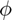
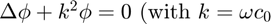
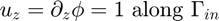
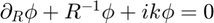
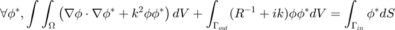
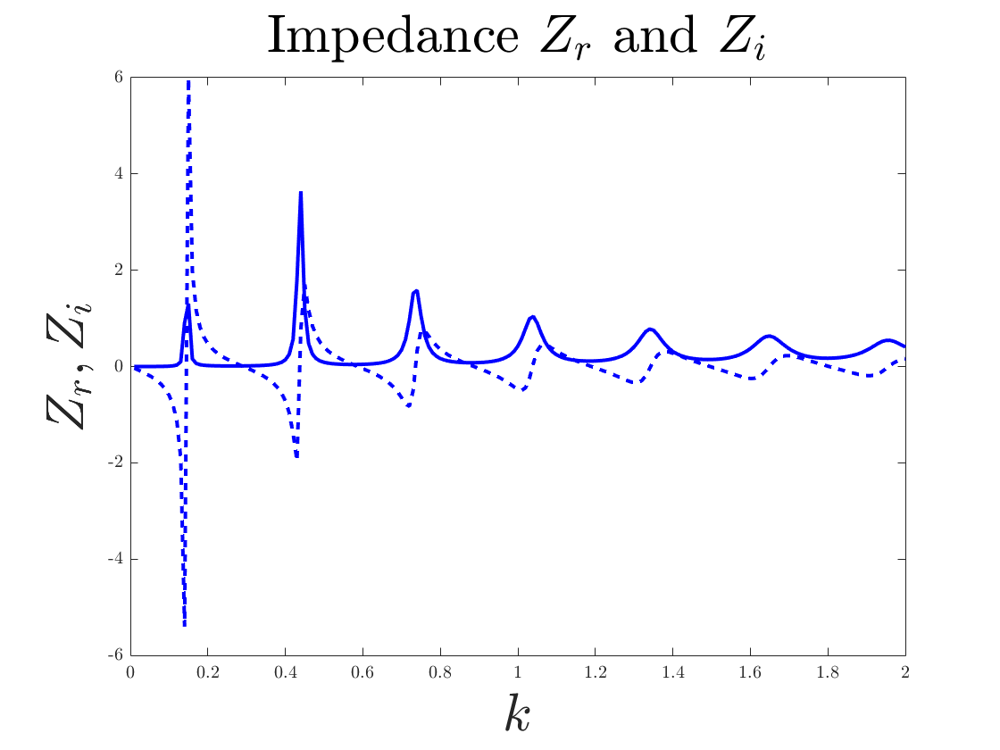
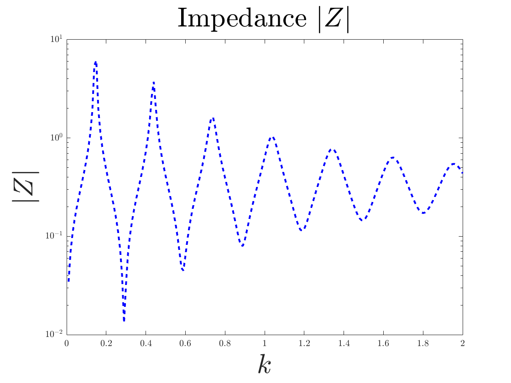
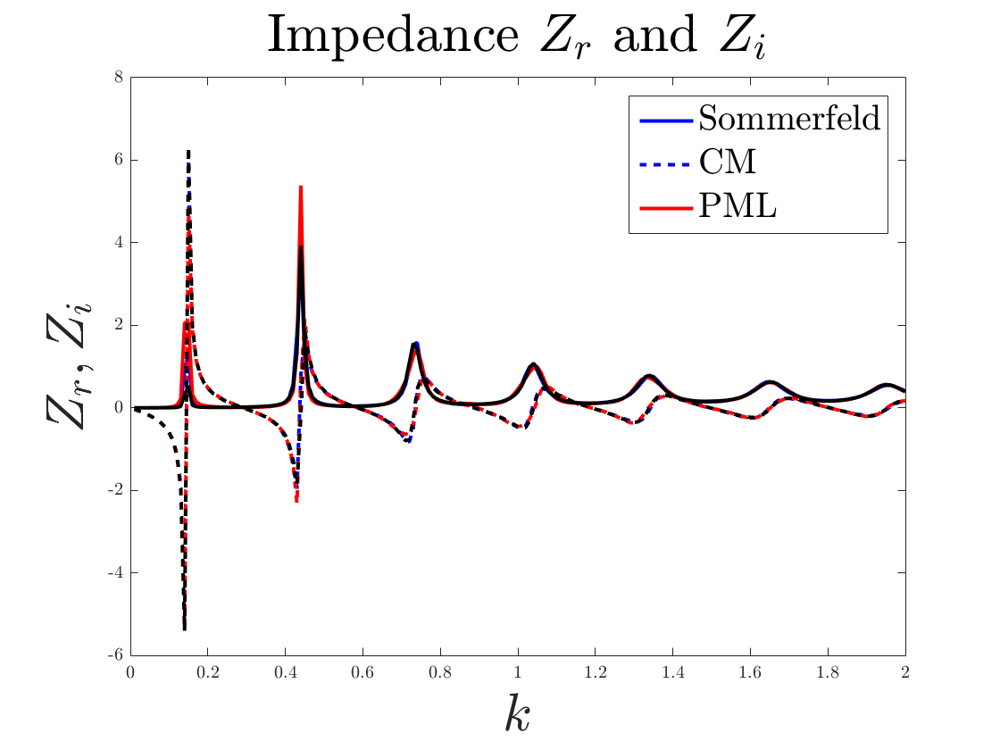
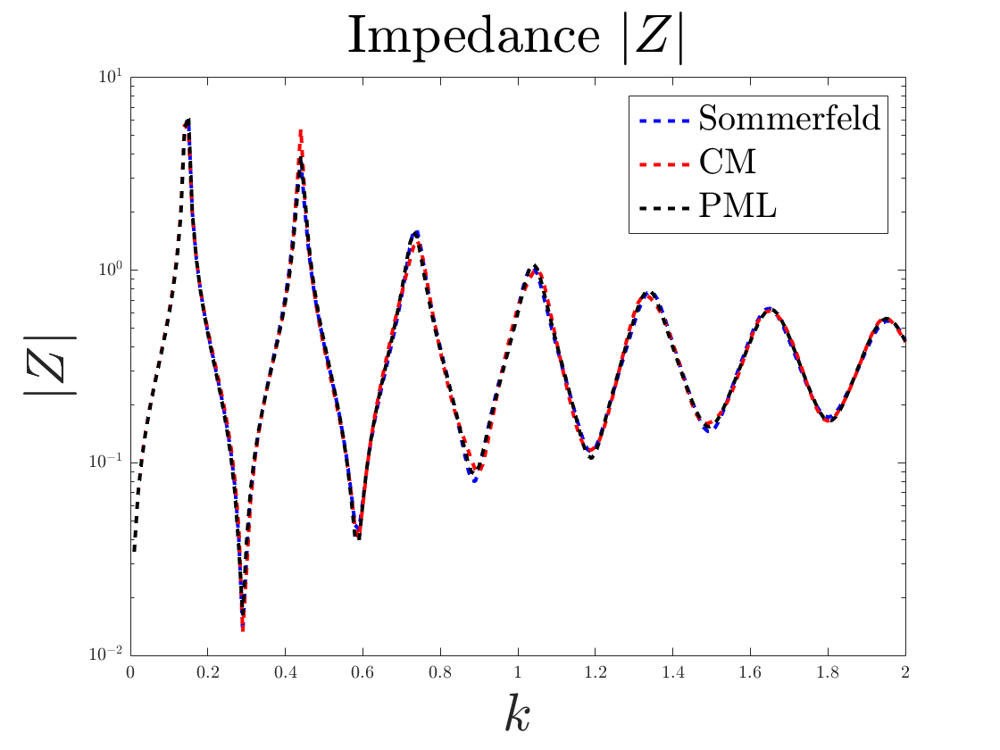
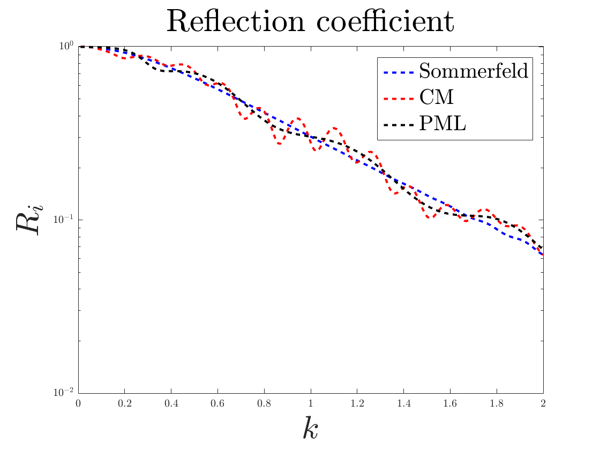

Acoustic field in a pipe with harmonic forcing at the bottom
This script demonstrates the use of StabFem for a linear acoustics problem
Problem : find the velocity potential  such as :
-  the acoustic wavenuber)
- 
-  (Sommerfeld condition) on

Variational formulation :

Contents
- initialisation
- Chapter 1 : building of a mesh
- plot the mesh :
- Chapter 2 : Resolution of an acoustically forced problem (and mesh adaptation)
- plot the structure
- plot the structure along with the mesh
- Extract p and u along the symmetry axis
- plot p and u along the symmetry axis
- Chapter 3 : loop over k to compute the impedance
 (using SOMMERFELD)
(using SOMMERFELD) - Plot
- plot in semilog
- Chapter 4 : trying better kind of boundary conditions : PML, CM
- trace de Z(k) parties reelles et imaginaires
- trace de Z(k) en semilog
- plot reflection coefficient
initialisation
clear all close all run('../../SOURCES_MATLAB/SF_Start.m'); set(groot, 'defaultAxesTickLabelInterpreter','latex'); set(groot, 'defaultLegendInterpreter','latex');
Chapter 1 : building of a mesh
ffmesh = SF_Mesh('Mesh_1.edp')
### INITIAL MESH CREATED WITH np = 1337 points
ffmesh =
DataDescription: '(Auxiliary file with information on initial mesh)'
datatype: 'Mesh'
meshtype: '2D'
np: 1337
Ndof: 11619
deltamin: 0.295564000000000
deltamax: 1.488820000000000
deltaA: 0.407319000000000
deltaB: 0.355871000000000
deltaC: 0.332579000000000
deltaD: 0.379764000000000
problemtype: 'AcousticAxi'
ZERO: 0
points: [3x1337 double]
bounds: [3x204 double]
tri: [4x2468 double]
nbe: 204
nt: 2468
labels: [1 2 3 4 5]
filename: './WORK/mesh.msh'
seg: []
meshgeneration: 0
plot the mesh :
SF_Plot(ffmesh);

Chapter 2 : Resolution of an acoustically forced problem (and mesh adaptation)
Forced = SF_LinearForced(ffmesh,1,'BC','SOMMERFELD'); ffmesh = SF_Adapt(ffmesh,Forced,'Hmax',1); % Adaptation du maillage Forced = SF_LinearForced(ffmesh,1,'BC','SOMMERFELD')
### ENTERING SF_ADAPT
rm: ./WORK/Eigenmode*: No such file or directory
Forced =
mesh: [1x1 struct]
filename: './WORK/Field_Impedance_Re_Omega1.txt'
DataDescription: 'FORCED LINEAR RESPONSE for an axisymmetric acoustic '
datatype: 'ForcedFlow'
datastoragemode: 'CxP2'
Lambda: 0.000000000000000 + 1.000000000000000i
u: [1277x1 double]
p: [1277x1 double]
Z: -0.021116600000000 + 0.023592700000000i
Xaxis: [501x1 double]
Paxis: [501x1 double]
Uaxis: [501x1 double]
plot the structure
figure(); SF_Plot(Forced,'u','boundary','on','colormap','redblue','cbtitle','|u''|'); hold on; SF_Plot(Forced,'p','boundary','on','colormap','redblue','symmetry','YM','cbtitle','p''','colorbar','westoutside');

plot the structure along with the mesh
figure('DefaultAxesFontSize',18); SF_Plot(Forced,'mesh'); hold on;SF_Plot(Forced,'u','mesh','off','boundary','on','colormap','redblue',... 'colorbar','northoutside','cbtitle','|u|','symmetry','YM'); % symmetry = XM means mirror about X-axis

Extract p and u along the symmetry axis
Xaxis = [-10 :.1 :10]; Uyaxis = SF_ExtractData(Forced,'u',0,Xaxis); Paxis = SF_ExtractData(Forced,'p',0,Xaxis);
plot p and u along the symmetry axis
figure(); plot(Xaxis,real(Uyaxis),Xaxis,imag(Uyaxis)); hold on;plot(Xaxis,real(Paxis),Xaxis,imag(Paxis)); xlabel('x'); legend('Re(u''_z)','Im(u''_z)','Re(p'')','Im(p'')'); pause(0.1);

Chapter 3 : loop over k to compute the impedance (using SOMMERFELD)
IMP = SF_LinearForced(ffmesh,[0.01:.01:2],'BC','SOMMERFELD','plot','no')
IMP =
mesh: [1x1 struct]
filename: './WORK/Impedances_Re.txt'
DataDescription: 'Impedance of a axisymmetric acoustic flow'
datatype: 'ForcedLinear'
ind: [200x1 double]
omega: [200x1 double]
Z: [200x1 double]
R: [200x1 double]
Plot
figure; plot(IMP.omega,real(IMP.Z),'b',IMP.omega,imag(IMP.Z),'b--','DisplayName','Sommerfeld'); title(['Impedance $Z_r$ and $Z_i$'],'Interpreter','latex','FontSize', 30) xlabel('$k$','Interpreter','latex','FontSize', 30); ylabel('$Z_r,Z_i$','Interpreter','latex','FontSize', 30); set(findall(gca, 'Type', 'Line'),'LineWidth',2); pause(0.1);
plot in semilog
figure; semilogy(IMP.omega,abs(IMP.Z),'b--','DisplayName','CM'); xlabel('b'); ylabel('|Z|'); xlabel('$k$','Interpreter','latex','FontSize', 30); ylabel('$|Z|$','Interpreter','latex','FontSize', 30); title(['Impedance $|Z|$'],'Interpreter','latex','FontSize', 30) leg.FontSize = 20; set(findall(gca, 'Type', 'Line'),'LineWidth',2); pause(0.1);
Chapter 4 : trying better kind of boundary conditions : PML, CM
IMPPML = SF_LinearForced(ffmesh,[0.01:.01:2],'BC','PML','plot','no'); IMPCM = SF_LinearForced(ffmesh,[0.01:.01:2],'BC','CM','plot','no'); IMP = SF_LinearForced(ffmesh,[0.01:.01:2],'BC','SOMMERFELD','plot','no');
trace de Z(k) parties reelles et imaginaires
figure; plot(IMP.omega,real(IMP.Z),'b',IMP.omega,imag(IMP.Z),'b--','DisplayName','Sommerfeld'); hold on; plot(IMPCM.omega,real(IMPCM.Z),'r',IMPCM.omega,imag(IMPCM.Z),'r--','DisplayName','CM'); plot(IMPPML.omega,real(IMPPML.Z),'k',IMPPML.omega,imag(IMPPML.Z),'k--','DisplayName','PML'); title(['Impedance $Z_r$ and $Z_i$'],'Interpreter','latex','FontSize', 30) xlabel('$k$','Interpreter','latex','FontSize', 30); ylabel('$Z_r,Z_i$','Interpreter','latex','FontSize', 30); leg=legend('Sommerfeld','CM','PML'); leg.FontSize = 20; set(findall(gca, 'Type', 'Line'),'LineWidth',2); pause(0.1);
trace de Z(k) en semilog
figure; semilogy(IMP.omega,abs(IMP.Z),'b--','DisplayName','CM'); hold on; semilogy(IMPCM.omega,abs(IMPCM.Z),'r--','DisplayName','CM'); semilogy(IMPPML.omega,abs(IMPPML.Z),'k--','DisplayName','CM'); xlabel('b'); ylabel('|Z|'); xlabel('$k$','Interpreter','latex','FontSize', 30); ylabel('$|Z|$','Interpreter','latex','FontSize', 30); title(['Impedance $|Z|$'],'Interpreter','latex','FontSize', 30) leg=legend('Sommerfeld','CM','PML'); leg.FontSize = 20; set(findall(gca, 'Type', 'Line'),'LineWidth',2); pause(0.1);
plot reflection coefficient
figure; semilogy(IMP.omega,IMP.R,'b--','DisplayName','Sommerfeld'); hold on; semilogy(IMPCM.omega,IMPCM.R,'r--','DisplayName','CM'); semilogy(IMPPML.omega,IMPPML.R,'k--','DisplayName','PML'); xlabel('$k$','Interpreter','latex','FontSize', 30); ylabel('$R_i$','Interpreter','latex','FontSize', 30); title(['Reflection coefficient'],'Interpreter','latex','FontSize', 30) leg = legend('Sommerfeld','CM','PML'); leg.FontSize = 20; set(findall(gca, 'Type', 'Line'),'LineWidth',2); % % k = [0.01:0.01:2.0]; % Z0 = 1/(2*pi); % R = 1; % L = 10; % ZL = Z0*(k.^2*R^2/4 + 1i*k*0.35*R); % Zin = Z0*(ZL.*cos(k*L)+1i*Z0*sin(k*L))./(1i*ZL.*sin(k*L)+Z0*cos(k*L)) % plot(k,-real(Zin),'k',k, -imag(Zin), 'k--'); % hold on; % plot(IMP.k,real(IMP.Z),'b',IMP.k,imag(IMP.Z),'b--','DisplayName','Sommerfeld'); % % plot(k,real(Zin),'k',IMPPML.k,real(IMPPML.Z),'b'); % plot(k,-imag(Zin),'k',IMPCM.k,imag(IMPML.Z),'b');